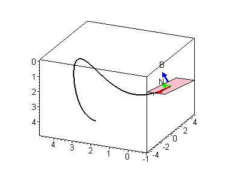
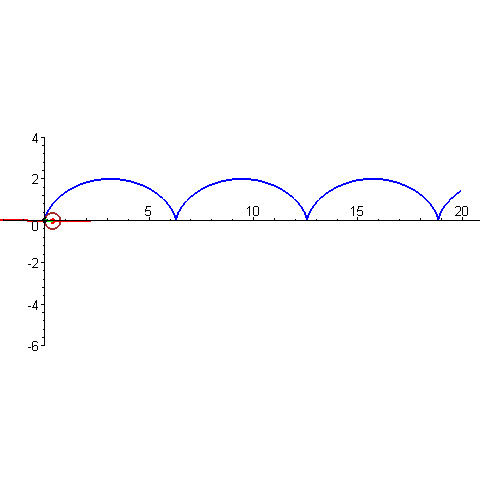

$$ \vec{T} = \frac{r'(t)}{||r'(t)||} $$
$$ \vec{N} = \frac{\vec{T}'(t)}{||\vec{T}'(t)||} $$
$$ \vec{B} = \vec{N} \times \vec{T} = \frac{r'(t) \times r''(t)}{||r'(t) \times r''(t)||} $$

Visualization of TNB frames
$$ \kappa = \left|\left| \frac{d\vec{T}}{ds} \right|\right| = ||T'(s)|| = \frac{T'(t)}{||r'(t)||} = \frac{||r' \times r''||}{||r'||^3} $$
$$ \tau = \frac{(\vec{r}' \times \vec{r}'') \cdot \vec{r}'''}{||\vec{r}' \times \vec{r}''||} = -\frac{d\vec{B}}{ds} \cdot \vec{N} $$

$$ \begin{matrix} x = r\cos{\theta} \\ y = r\sin{\theta} \\ z = z \end{matrix} $$
$$ \begin{matrix} \rho \geq 0 \\ 0 \leq \theta \leq 2\pi \\ 0 \leq \phi \leq \pi \end{matrix} $$
$$ \begin{matrix} r = \rho\sin{\phi} \\ x = r\cos{\theta} = \rho\cos{\theta}\sin{\phi} \\ y = r\sin{\theta} = \rho\sin{\theta}\sin{\phi} \\ z = \rho\cos{\phi} \\ \rho = \sqrt{x^2 + y^2 + z^2} \\ \tan{\theta} = \frac{y}{x} \\ \cos{\phi} = \frac{z}{\rho} \end{matrix} $$
$$ \iiint f(x, y, z) \cdot dV \to \int_{\theta_1}^{\theta_2}\int_{r_1}^{r_2}\int_{z_1}^{z_2}f(r\cos{\theta}, r\sin{\theta}, z) r \cdot dz \cdot dr \cdot d\theta $$
$$ \iiint f(x, y, z) \cdot dV = \int_{\theta_1}^{\theta_2} \int_{\phi_1}^{\phi_2} \int_{\rho_1}^{\rho_2} f(x, y, z) \rho^2 \cdot \sin{\phi} \cdot d\rho \cdot d\phi \cdot d\theta $$
$$ \int_a^b f(x) \cdot dx, \text{ } [a,b] \in x \to \int_{u=c}^{u=d} g(u) \cdot du, \text{ } [c,d] \in \text{"u"-axis} $$
$$ \int_R\int f(x,y) \cdot dA \Rightarrow \int\int f(g(u,v), h(u,v)) \cdot J \cdot du \cdot dv $$
$$ J=\frac{\partial (x,y)}{\partial (u,v)} = \begin{vmatrix} \frac{\partial x}{\partial u} & \frac{\partial x}{\partial v} \\ \frac{\partial y}{\partial u} & \frac{\partial y}{\partial v} \end{vmatrix} $$
Evaluate the integral:
$$ \int_R\int \sqrt{1-\frac{x^2}{4}-\frac{y^2}{9}} \cdot dA $$
Where $R: \frac{x^2}{4} + \frac{y^2}{9} = 1$.
Let $x=2u$ and $y=3v$. Let $u^2+v^2=r^2$.
So,
$$ \frac{4u^2}{4}+\frac{9v^2}{9}=1 \Rightarrow u^2+v^2=1 \Rightarrow r^2=1 $$
$$ \therefore 0 \leq r \leq 1 $$
And,
$$ 0 \leq \theta \leq 2\pi $$
We calculate the Jacobian as:
$$ J = \begin{vmatrix} 2 & 0 \\ 0 & 3 \end{vmatrix} = 6 $$
Thus, the integral can be transformed into:
$$ \int_R\int \sqrt{1-\left(\frac{x^2}{4} + \frac{y^2}{9}\right)} \cdot dA = \int_{\theta=0}^{\theta=2\pi} \int_{r=0}^{r=1} 6\sqrt{1-r^2} \cdot r \cdot dr \cdot d\theta $$
Let $u=1-r^2$, so:
$$ \frac{du}{dr}=-2r \Rightarrow dr = -\frac{du}{2r} $$
Then the integral becomes:
$$ \int_{\theta=0}^{\theta=2\pi} \int_{u=0}^{u=1} 6 \cdot \sqrt{u} \cdot r \cdot \frac{du}{2r} \cdot d\theta = \int_{\theta=0}^{\theta=2\pi} \int_{u=0}^{u=1} 3\sqrt{u} \cdot du \cdot d\theta = 4\pi $$